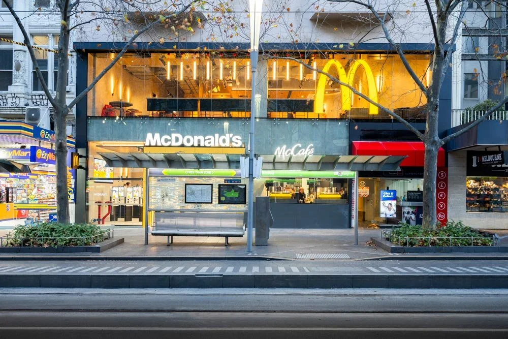
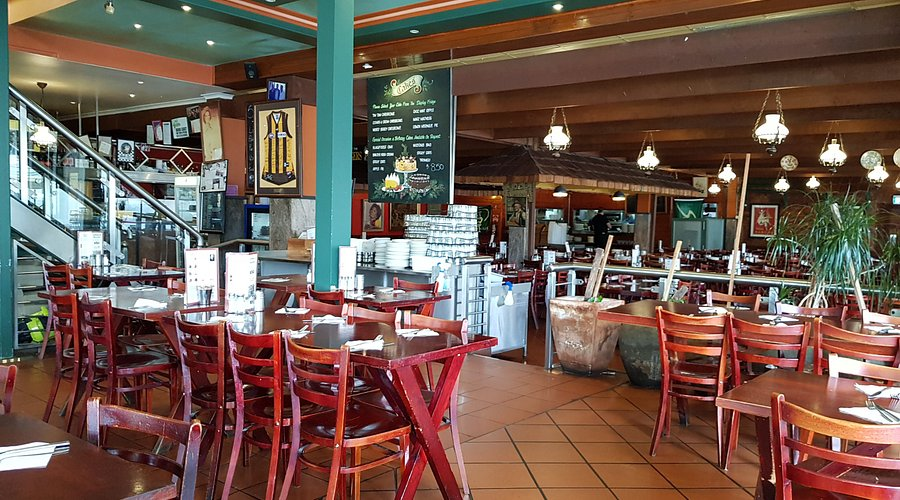
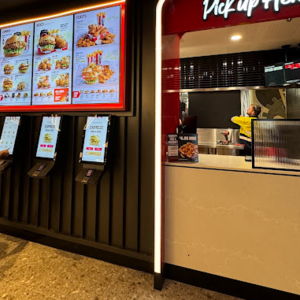

Popular Restaurants in Melbourne
Below are 6 restaurants/dine in places in Melbourne that are popular. These restaurants are unique in their crusine and the way they make food.
Grill'd

Grill'd is a restaurant that serves mainly burgers. They have chips, drinks and all types of options. The burgers are so great to eat with yourself to enjoy or to have on a night out. Various locations are placed around. Even so that there is also a kids meal that are targetted for young children while adults can get themselves a meal and their choice of buns and sauce if they want.
Main Dishes: Burgers (Around $20)
Crusine: Universal
Location: Melbourne Central, Level 3 La Trobe St, Melbourne VIC 3000
Deposit Amount for registration: $5
Average Amount per person: $15
Mcdonalds

This is a very popular food brand chain around the world. Mcdonalds known for being a overall popular fast food chain that is always busy. This is a world wide restaurant that attracts customers due to their quick delivery. The menu consists of all types of foods ranging from burgers to fries to ice creams and even with their cafe menu aswell as it is always expanding. Many places also have a play play for kids.
Main Dishes: Fast food, burgers, fries ($1 to $20)
Crusine: Universal
Location: 275 Swanston St, Melbourne VIC 3000
Deposit Amount for registration: $5
Average Amount per person: $15
Sofia

Sofia is an italian restaurant that are known for their pizza and pasta dishes. The dishes are large in portions and food is fantastic for italian crusine. Sofia is a family owned restaurant that is big on customer satisfaction as their foods are always at an amazing standard as they use their techniques to craft an amazing pizza or any dishes on the menu.
Main Dishes: Pizza and pasta ($22)
Crusine: Italian
Location: 857 Burke Rd, Camberwell VIC 3124
Deposit Amount for registration: $5
Average Amount per person: $20
DoDee Paidang

Dodee Paidang is a restuarant that serves amazing Thai food and Thai crusine from mouth watering papaya salads to laksa soups. The food selection is quite large with many famous Thai dishes that are great to have with friends and family. At nights this place will also have people singing and dancing, inviting people to gather around. The food is authentic Thai food.
Main Dishes: Thai cruisine ($20)
Crusine: Thai
Location: Basement/353 Little Collins St, Melbourne VIC 3000
Deposit Amount for registration: $5
Average Amount per person: $15
Hungry Jack's

Hungry Jack's also know as burger king is a fast food restaurant that serves mainly burgers. They are mainly known for their great tasting burgers. Their burgers are not too expensive on their own as well, while meals are better for value. They deliver the food in a quick manner while tasting absolutely amazing. The chips at Hungry Jack's by far are the most crispiest ones out of the 3 main fastfood franchise.
Main Dishes: Burgers ($15)
Crusine: Universal
Location: 260 La Trobe St, Melbourne VIC 3000
Deposit Amount for registration: $5
Average Amount per person: $15
KFC

KFC is another fast food chain but this one is mostly known for their fried chicken wings and drumsticks. Especially combo and boxed meals to eat with friends and family. They have since opened thousands and thousands of restaurants around the world. KFC sells meals and boxed meals which are great to have if you are in a pinch. The food is goodly priced with the wide range of boxed and new items on arrival.
Main Dishes: Fried Chicken ($16)
Crusine: Universal
Location: Lower Ground, Coop's Shot Tower, Swanston St, Melbourne VIC 3000
Deposit Amount for registration: $5
Average Amount per person: $15
References
- Grill'd: Grill’d Burgers Melbourne Central - Healthy Burger Restaurant. (n.d.). Grill’d Healthy Burgers. https://grilld.com.au/restaurants/victoria/melbourne-central
- Mcdonalds: Cheney, P. (2024, July 29). McDonalds’ town Hall — zone design. Zone Design. https://www.zonedesign.com.au/home/mcdonaldstownhall
- Sofia: Tripadvisor.com.au. (n.d.). https://www.tripadvisor.com.au/Restaurant_Review-g1129114-d789982-Reviews-Sofia_Pizza_Restaurant-Camberwell_Greater_Melbourne_Victoria.html
- Dodee: Tripadvisor. (n.d.). DODEE PAIDANG THAI BAR AND CAFE, Melbourne - Central Business District - Updated 2026 restaurant reviews, menu & prices - Tripadvisor. https://www.tripadvisor.com.au/Restaurant_Review-g255100-d12703814-Reviews-DoDee_Paidang_Thai_Bar_and_Cafe-Melbourne_Victoria.html
- Hungry Jack's: Yelp. (2023, October 25). Yelp. https://m.yelp.com/biz/hungry-jacks-melbourne-5?dd_referrer=https%3A%2F%2Fwww.google.com%2F
- KFC: 24 Meal Deal | KFC Melbourne Central Food Court Coupons, Vouchers, Codes & Events | Restaurant in Melbourne, Victoria. (n.d.). https://24mealdeal.com.au/?restaurant=kfc_melbourne_central_food_court_72417131902_coop_s_shot_tower_lg_5_concourse_level_lower_ground_melbourne_victoria_3000